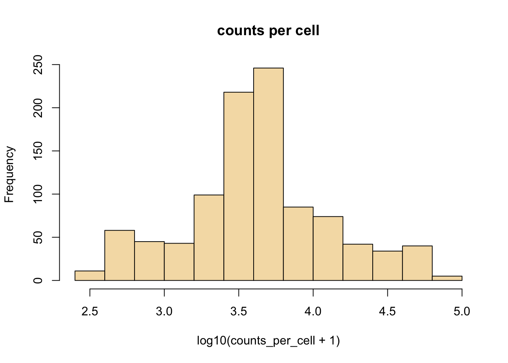
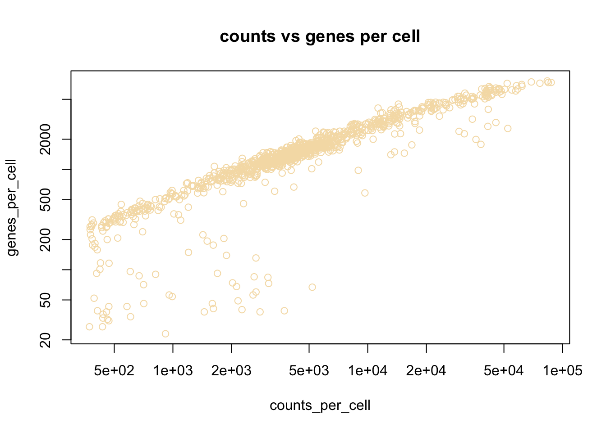
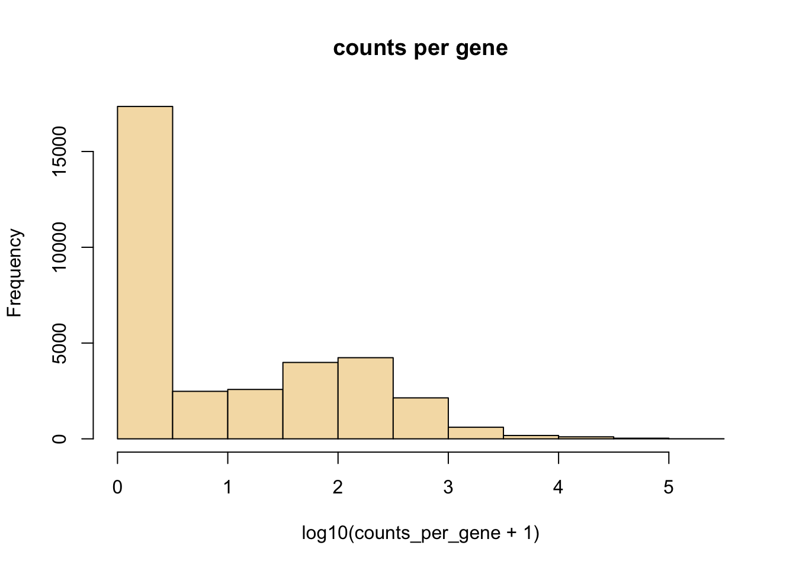

4 Data Wrangling scRNAseq
4.1 Goal
- To give you experience with the analysis of single cell RNA sequencing (scRNA-seq) including performing quality control and identifying cell type subsets.
- To introduce you to scRNA-seq analysis using the Seurat package.
4.2 Introduction
Data produced in a single cell RNA-seq experiment has several interesting characteristics that make it distinct from data produced in a bulk population RNA-seq experiment. Two characteristics that are important to keep in mind when working with scRNA-Seq are drop-out (the excessive amount of zeros due to limiting mRNA) and the potential for quality control (QC) metrics to be confounded with biology. This combined with the ability to measure heterogeniety from cells in samples has shifted the field away from the typical analysis in population-based RNA-Seq. Here we demonstrate some approaches to quality control, followed by identifying and analyzing cell subsets.
For this tutorial, we will be analyzing the a dataset of Non-Small Cell Lung Cancer Cells (NSCLC) freely available from 10X Genomics (https://support.10xgenomics.com/single-cell-vdj/datasets/2.2.0/vdj_v1_hs_nsclc_5gex), using the Seurat R package (http://satijalab.org/seurat/), a popular and powerful set of tools to conduct scRNA-seq analysis in R. In this dataset, there are 7802 single cells that were sequenced on the Illumina NovaSeq 6000. Please note this tutorial borrows heavily from Seurat’s tutorials, so feel free to go through them in more detail.
4.2.1 Load necessary packages
When loading libraries, we are asking R to load code for us written by someone else. It is a convenient way to leverage and reproduce methodology developed by others.
4.2.2 Read in NSCLC counts matrix.
The data for Non-Small Cell Lung Cancer Cells (NSCLC) is freely available from 10X Genomics (https://support.10xgenomics.com/single-cell-vdj/datasets/2.2.0/vdj_v1_hs_nsclc_5gex). We start by reading in the counts matrix generated by the Cell Ranger count program.
Task: Change the directory name to mydir/ where you saved your data
Task: Check the dirname to dir where you saved your data
## dirname <- "/home/genomics/workshop_materials/scrna/"
dirname <- "/Users/kgosik/Documents/data/cellranger/vdj-nsclc/"
counts_matrix_filename = paste0(dirname, "filtered_gene_bc_matrices/GRCh38/")
counts <- Read10X(data.dir = counts_matrix_filename) # Seurat function to read in 10x count data
# To minimize memory use on the docker - choose only the first 1000 cells
counts <- counts[, 1:1000]4.2.3 Let’s examine the sparse counts matrix
## 10 x 3 sparse Matrix of class "dgCMatrix"
## AAACCTGAGCTAGTCT AAACCTGAGGGCACTA AAACCTGAGTACGTTC
## RP11-34P13.3 . . .
## FAM138A . . .
## OR4F5 . . .
## RP11-34P13.7 . . .
## RP11-34P13.8 . . .
## RP11-34P13.14 . . .
## RP11-34P13.9 . . .
## FO538757.3 . . .
## FO538757.2 . . .
## AP006222.2 . . .Here we see the upper left corner of the sparse matrix. The columns are indexed by 10x cell barcodes (each 16 nt long), and the rows are the gene names. We mentioned these matrices are sparse, here we see only zeroes (indicated by the “.” symbol); this is the most common value in these sparse matrices. Next, let us look at the dimensions of this matrix.
4.2.4 How big is the matrix?
## [1] 33694 1000Here we see the counts matrix has 33694 genes and 7802 cells.
4.2.5 How much memory does a sparse matrix take up relative to a dense matrix?
## [1] 23923312 bytes## [1] 271919144 bytesWe see here that the sparse matrix takes 225 Mb in memory while storing the matrix in a dense format (where all count values including zeros are stored) takes almost 10 times as much memory! This memory saving is very important, especially as data sets are now being created that are beyond a million cells. These matrices can become unmanageable without special computing resources.
In the sparse representation, we assume that the majority of count values in a matrix are zero. We only store the non-zero values. This is implemented in the Matrix package using a dgTMatrix object.
4.3 Filtering low-quality cells
You can learn a lot about your scRNA-seq data’s quality with simple plotting. Let’s do some plotting to look at the number of reads per cell, reads per genes, expressed genes per cell (often called complexity), and rarity of genes (cells expressing genes).
4.3.1 Look at the summary counts for genes and cells
counts_per_cell <- Matrix::colSums(counts)
counts_per_gene <- Matrix::rowSums(counts)
genes_per_cell <- Matrix::colSums(counts > 0) # count gene only if it has non-zero reads mapped.Task: In a similar way, can you calculate cells per genes? replace the ‘?’ in the command below
#### cells_per_gene <- Matrix::?(counts>?) # only count cells where the gene is expressed
cells_per_gene <- Matrix::rowSums(counts>0) # only count cells where the gene is expressedcolSums and rowSums are functions that work on each row or column in a matrix and return the column sums or row sums as a vector. If this is true counts_per_cell should have 1 entry per cell. Let’s make sure the length of the returned vector matches the matrix dimension for column. How would you do that? ( Hint:length() ).
Notes: 1. Matrix::colSums is a way to force functions from the Matrix library to be used. There are many libraries that implement colSums, we are forcing the one from the Matrix library to be used here to make sure it handles the dgTmatrix (sparse matrix) correctly. This is good practice.



Here we see examples of plotting a new plot, the histogram. R makes this really easy with the hist function. We are also transforming the values to log10 before plotting, this is done with the log10 method. When logging count data, the + 1 is used to avoid log10(0) which is not defined.
Can you make a histogram of counts per gene in log10 scale?

4.3.2 Plot cells ranked by their number of detected genes.
Here we rank each cell by its library complexity, ie the number of genes detected per cell. This is a very useful plot as it shows the distribution of library complexity in the sequencing run. One can use this plot to investigate observations (potential cells) that are actually failed libraries (lower end outliers) or observations that are cell doublets (higher end outliers).

4.4 Beginning with Seurat:
4.4.1 Creating a seurat object
To analyze our single cell data we will use a seurat object. Can you create an Seurat object with the 10x data and save it in an object called ‘seurat’? hint: CreateSeuratObject(). Can you include only genes that are are expressed in 3 or more cells and cells with complexity of 350 genes or more? How many genes are you left with? How many cells?
### seurat<-CreateSeuratObject(raw.data = counts, ? = 3, ? = 350, project = "10X_NSCLC")
seurat <- CreateSeuratObject(counts = counts, min.cells = 3, min.features = 350, project = "10X_NSCLC")## Warning: Feature names cannot have underscores ('_'), replacing with dashes ('-')4.4.1.1 Object Slots
Almost all our analysis will be on the single object, of class Seurat. This object contains various “slots” (designated by seurat@slotname) that will store not only the raw count data, but also the results from various computations below. This has the advantage that we do not need to keep track of inidividual variables of interest - they can all be collapsed into a single object as long as these slots are pre-defined as:
- assays - A list of assays within this object
- meta.data - Cell-level meta data
- active.assay - Name of active, or default, assay
- active.ident - Identity classes for the current object
- graphs - A list of nearest neighbor graphs
- reductions - A list of DimReduc objects
- project.name - User-defined project name (optional)
- tools - Empty list. Tool developers can store any internal data from their methods here
- misc - Empty slot. User can store additional information here version Seurat version used when creating the object
seurat@assays$RNA@counts is a slot that stores the original gene count matrix. We can view the first 10 rows (genes) and the first 10 columns (cells).
## 10 x 10 sparse Matrix of class "dgCMatrix"## [[ suppressing 10 column names 'AAACCTGAGCTAGTCT', 'AAACCTGAGGGCACTA', 'AAACCTGAGTACGTTC' ... ]]##
## FO538757.2 . . . . 1 2 . . . .
## RP4-669L17.10 . . . . . . . . . .
## RP11-206L10.9 . . . . . . . . . .
## LINC00115 . . . . . . . . . .
## NOC2L . . . . 2 4 . 1 . .
## KLHL17 . . . . . . . . . .
## PLEKHN1 . . . . . . . . . .
## HES4 . . . . . 9 . . . 1
## ISG15 . . . . 1 1 . . 1 .
## AGRN . . . . . . . . . .4.4.1.2 Object Information
Summary information about Seurat objects can be had quickly and easily using standard R functions. Object shape/dimensions can be found using the dim, ncol, and nrow functions; cell and feature names can be found using the colnames and rownames functions, respectively, or the dimnames function. A vector of names of Assay, DimReduc, and Graph objects contained in a Seurat object can be had by using names.